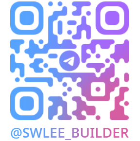

문제 정의 구조화
현장 운영 문제를 제품 요구사항과 자동화 과제로 전환하는 문제 정의 능력.
14년+ 동안 다양한 산업에서 PO, PM, 서비스기획, 사업기획을 수행하며 현장 운영 이슈를 제품 구조와 자동화 과제로 전환해 왔습니다. Ops · SCM · MD · CS · 개발 조직을 하나의 실행 프레임으로 정렬하고, WMS · ERP · CRM · 정산 시스템을 실제 운영 가능한 수준으로 설계하는 데 강점이 있습니다.
기획에 머무르지 않고 운영 구조, 데이터 흐름, 예외 처리 기준까지 제품 안에 내재화하는 타입의 운영형 PO입니다.
14년 4개월 경력을 바탕으로 PO, PM, 서비스기획, 사업기획, 신사업기획 전반을 수행했습니다. MVP 개발과 사업 프로젝션, 서비스 설계, 운영 시스템 구조화까지 연결해 왔으며, 최근에는 업무 자동화와 AI agent, Codex, OpenClaw 등 최신 기술을 적극 도입해 반복 업무를 시스템 중심 운영으로 전환하는 데 집중하고 있습니다. 단순히 기획 문서를 정리하는 역할이 아니라, 현장의 병목을 구조화하고 이를 제품 목표, 요구사항, 우선순위, 운영 룰, 예외 처리 기준으로 번역해 실제 실행 가능한 운영 체계로 연결해 온 것이 강점입니다. 리테일테크, 생성형 AI, 버티컬 플랫폼, 대규모 운영 정책 등 서로 다른 산업에서도 본질적으로는 사람 의존적 운영을 시스템 중심 구조로 전환하는 문제를 다뤄 왔고, 그 과정에서 Ops · SCM · MD · CS · 개발 조직을 하나의 프레임으로 정렬하는 역할을 수행했습니다. 운영 효율, 데이터 정합성, 추적 가능성, 서비스 확장성을 함께 고려하는 실행형 PO로서 제품의 기획부터 고도화, 조직 간 정렬, 운영 내재화까지 전 과정을 리드할 수 있습니다.
현업 병목을 발견하고, 이를 우선순위가 있는 제품 요구사항과 운영 자동화 과제로 재구성하는 데 강점이 있습니다.
현장 운영 문제를 제품 요구사항과 자동화 과제로 전환하는 문제 정의 능력.
운영과 개발 조직을 연결하며 우선순위 조정과 실행 리딩을 수행.
어드민, ERP, WMS, CRM, 정산·청구 시스템 등 운영형 제품 설계 경험.
리브랜딩, 그로스, 신사업 기획을 사업-제품 전략과 정렬해 실행.
AI agent 기반 서비스 기획과 개발 프로젝트 관리, 운영 자동화 추진.
대규모 플랫폼 운영부터 버티컬 서비스, 생성형 AI, 리테일 오퍼레이션 시스템까지 확장해 온 흐름입니다.
Retail Ops Platform 구축·고도화 총괄, 오피스 간식복지 솔루션 사업 총괄, 리브랜딩·유저그로스·RMN 사업 기획 수행.
주식·ETF 투자 특화 자연어 질의응답 서비스와 기업 맞춤형 RAG LLM 서비스 기획. 모바일 웹, 웹 어드민, 개발 프로젝트 관리.
검증 기반 프리미엄 데이팅 서비스 앱 및 운영 구조 설계. AOS/iOS 앱 기획과 웹 어드민, 개발 프로젝트 관리 수행.
3쿠션 당구 버티컬 플랫폼 Zero-to-One 단계 리딩. 개발팀 빌딩, 앱/웹 어드민 기획, 서비스 운영 정책 수립.
채용광고 머천다이징, 기업서비스 운영 정책 수립, 어뷰징 모니터링 부서 운영, 이력서/채용정보/ERP 서비스 기획 수행.
문제 정의 → 해결 방안 → 실행 → 결과/임팩트 → 인사이트 흐름으로 정리한 핵심 케이스입니다.
사람 처리 중심 운영을 시스템 중심 운영으로 전환한 핵심 프로젝트
운영 핵심 플로우가 사람 숙련도와 수작업에 의존해 운영 비용, SLA 편차, 데이터 정합성 이슈가 반복됐습니다.
반복 업무 제거와 예외 처리 기준의 시스템 내재화 방향으로 문제를 재정의하고, 발주부터 정산·청구, CS까지 하나의 플랫폼 구조로 묶었습니다.
Ops·SCM·MD·CS VOC를 수집하고 병목과 예외 케이스를 구조화해 제품 목표, 로드맵, 자동화 우선순위를 정렬했습니다.
사람 처리 중심이던 운영을 시스템 중심으로 전환하는 기반을 구축했고, 데이터 정합성과 추적성, 예외 처리 기준을 운영 체계에 내재화했습니다.
운영 혁신은 인력을 더 넣는 것이 아니라 판단 기준을 데이터 구조와 룰로 통일하는 데서 시작됩니다.
공급형 서비스가 아닌 경험형 B2B 리테일 구조로 재설계
사내 간식 서비스가 단순 공급/설치 중심으로 설계되어 사용자 경험과 운영 효율을 동시에 만족시키기 어려웠습니다.
플래그십 스토어 경험과 스마트 벤딩 기술을 결합해 사내 리테일 경험 자체를 재설계하는 방향으로 접근했습니다.
시장·고객 요구 분석, 비즈니스 요건 정의, 우선순위 조정, 운영 및 그로스 관리까지 총괄했습니다.
서비스 포지셔닝과 제품 전략을 정리했고, 2024년 대비 2025년 사업부문 30% 성장 기반을 만들었습니다.
B2B 복지형 리테일은 설치보다 재구매와 지속 이용을 만드는 운영 경험 설계가 핵심입니다.
브랜드, 스토어, 미디어 자산을 하나의 성장 구조로 연결
브랜드, 스토어, 미디어 자산이 확장되는 상황에서 고객 가치 제안과 성장 구조를 더 선명하게 정리할 필요가 있었습니다.
리브랜딩, 유저 성장, RMN을 별개 과제가 아닌 하나의 성장 구조로 연결했습니다.
브랜드 메시지, 타깃 고객, 수익화 방향, 오프라인 리테일 접점 연결 구조를 재정의했습니다.
워커스미디어와 워커스마켓의 역할을 재정렬하고, 미디어-스토어-오프라인 접점 연결 기반을 마련했습니다.
리테일테크의 성장은 단일 상품보다 고객 접점의 반복 노출 구조 설계에 달려 있습니다.
질문 중심 UX와 기업형 RAG 구조를 결합한 AI 서비스 기획
검색 중심 UX로는 사용자의 실제 질문 의도와 기업 내부 지식 활용 니즈를 충분히 해결하기 어려웠습니다.
질문 중심 자연어 질의응답 구조와 기업형 RAG LLM 서비스 방향을 설정했습니다.
모바일 웹, 웹 어드민, 개발 프로젝트를 관리하며 검색-응답-운영 관리 구조를 제품 관점에서 설계했습니다.
금융 정보 탐색 경험을 질의응답 중심으로 전환하고, 기업형 생성형 AI 서비스 구조를 구체화했습니다.
기업용 AI의 경쟁력은 모델 성능 자체보다 데이터 연결 구조와 운영 통제 도구에서 나옵니다.
운영 정책, 신뢰 구조, Zero-to-One 실행 경험을 축적한 기반 커리어
검증 기반 프리미엄 데이팅 서비스 설계와 앱/운영 구조 기획.
3쿠션 당구 버티컬 플랫폼의 Zero-to-One 구축과 개발팀 빌딩.
대규모 채용 플랫폼 운영 정책과 어뷰징 모니터링 체계 구축.
정책, 운영 기준, 제품 구조가 함께 돌아가야 서비스 규모의 경제가 생긴다는 점을 축적했습니다.
좋은 서비스는 기능보다 신뢰 체계와 운영 구조가 먼저 받쳐줘야 지속 성장합니다.
운영형 시스템과 리테일, AI 서비스, 성장 기획을 넘나드는 도메인 스펙트럼을 보유하고 있습니다.
현장 운영 병목, 데이터 흐름, 예외 처리 기준을 제품 구조로 전환.
운영형 시스템 설계와 프로세스 정합성, 정산·청구 흐름까지 연결.
오프라인 리테일 경험과 운영 효율을 동시에 만족시키는 구조 설계.
질문 중심 UX와 검색-응답-운영 관리 구조를 고려한 AI 서비스 기획.
사업, 제품, 운영 시스템, AI 자동화를 하나의 실행 체계로 연결하는 스킬셋입니다.
PO, PM, 서비스기획, 사업기획, 신사업기획, MVP 개발, 사업 프로젝션
Admin, ERP, WMS, CRM, 정산/청구 시스템, 운영 자동화, 정책 설계
AI agent, Codex, OpenClaw, Harness Engineering, RAG, LLM, NLP
운영 혼선을 구조화된 시스템으로 바꾸고, 사업·제품·현장 실행을 하나로 묶는 사람입니다.
저는 현장 운영, 제품 기획, 사업 전략, AI 자동화를 따로 보지 않습니다. 실제 운영 조직이 겪는 병목을 구조화하고, 그것을 제품 요구사항, 우선순위, 자동화 과제, 협업 프로세스로 연결해 실행하는 데 강점이 있습니다. 단순히 기획 문서를 만드는 역할이 아니라, 운영 가능한 수준까지 제품을 밀어 붙이는 Builder형 PO로 포지셔닝하고 있습니다.
텔레그램 QR 을 스캔해 주세요.
